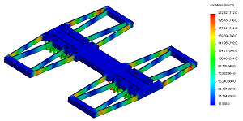

2.72 Elements of Mechanical Design
DESCRIPTION AND PROCESS
Teams of 6-8 students design, fabricate and test a desktop lathe. At the end of the class, it must be able to turn aluminum and brass stock while maintaining better than 50 micron accuracy. Extra recognition is given to the team whose lathe can take the greatest depth of cut, maintain the highest spindle speed, or cut steel. Lathes are tested by dropping them from approximately 1 meter onto concrete and by hammer impact. Their sliding elements (carriage and cross slide) must operate while vertically loaded with 200 lbs.
ROLE
I was responsible for the FEA that supported our team's design choices, as well as our flexure bearing design. Additionally, all team members contributed design insight, part designs, process plans, and machining time.

Stress analysis of cross slide flexure bearing with Solidworks Simulation.

Finished lathe.